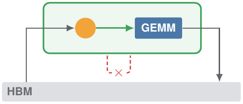
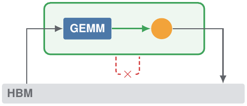
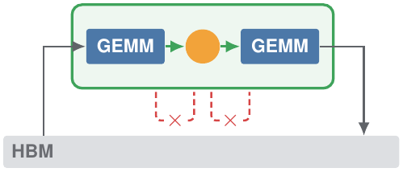
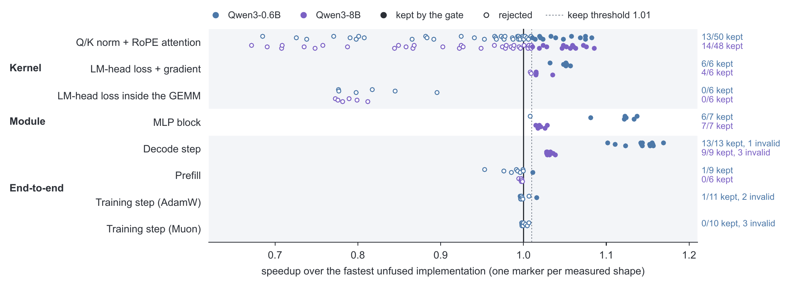
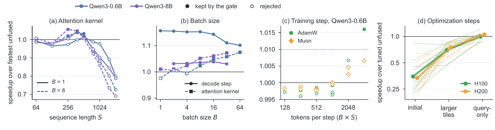

KernelFuser: Automating Kernel Fusion with LLM Agents
Narrated overview with English captions. The narration is synthesized speech.
KernelFuser automates kernel fusion for PyTorch models in training and inference. LLM agents choose the fusions and write the fused forward and backward kernels. Two gates that the agents cannot change keep a fused kernel only where it reproduces the original module and runs faster than the best unfused implementation; every other input shape runs the original path.
Snapshot
Every operator is its own kernel
In a transformer layer, memory-bound operators such as normalizations and residual additions sit between the compute-bound GEMM and attention kernels. Each one reads a tensor that the previous kernel has just written to high-bandwidth memory (HBM) and writes a new one that the next kernel reads back. In Qwen3-4B compiled with torch.compile, of the kernels between one MLP block and the next attention kernel are such operators, and they take of the kernel time.
Kernel fusion merges such an operator into a neighboring GEMM or attention kernel, the anchor. KernelFuser covers four fusion types.

applied to an input tile after the anchor loads it

applied to an output tile before the anchor writes it

intermediates of dependent GEMMs stay on chip

consecutive pointwise or reduction operators in one kernel
A correct fused kernel is not always faster
A fusion removes the separate kernels of the merged operators; the saved fraction f is their share of the unfused run time. Their work moves into the anchor, which becomes slower; the fusion overhead c is the relative increase of the anchor time. Both change with the input shape and the GPU, so the same fused kernel can win at one shape and lose at another.
Bar lengths are schematic. Blue: anchor kernel. Orange: separate memory-bound kernels. Hatched green: work that the fusion adds to the anchor.
The saved fraction comes from a profile of the unfused model, and the fusion overhead carries over from the same fusion on other architectures. The cost model therefore predicts the verdict before any kernel for the target model is written. A fusion can also gain at most the headroom of its anchor: built on an anchor that is slower than the vendor kernel, it can lose even when it removes all of the memory traffic.
The agents propose, and the measurements decide

Model Parser
Captures the forward and backward graphs and profiles the unfused kernels on the target GPU.
Fusion Explorer
Enumerates fusion plans around each GEMM and attention kernel, largest first, and ranks them with the cost model.
Kernel Synthesizer
A generator agent writes the forward and backward kernels in Triton, TLX or Helion; a supervisor agent runs fixed tests and returns each failure.
Kernel Assembler
Admits each kernel through two gates and calls it only at the shapes where it passed. A rejected plan backs off to its sub-chains.
Correctness gate
Compares the fused program with the unfused one at every target shape: outputs and gradients, and for the whole model the loss and the update of every trainable parameter. Tolerances are fixed before timing.
Performance gate
Times the fused kernel against compiled PyTorch, the vendor library and the anchor without fusion, interleaved in CUDA graphs, and keeps it only if it beats the fastest of them by more than the noise floor (ε = ).
Production training of a ranking model
For an industrial ranking model trained on GPUs, KernelFuser generates fused kernels that cover all four fusion types. All match the unfused PyTorch implementation, and run in production training.
Measured with all deployed kernels enabled, against the same eager production path; it is not the sum of the gains of the individual kernels. The model is proprietary: shapes, absolute timings and further details of the deployment are not disclosed.
| Kernel | Backend | Status | Fwd. | Bwd. |
|---|
Fwd. and Bwd. are kernel speedups; for the three kernels measured at the kernel level only, they are the share of the normalization time that the fusion removes.
Open-weight LLMs
On open-weight models, every configuration is measured against the fastest unfused implementation: torch.compile, eager PyTorch with vendor kernels, and the same anchor after separate kernels. A configuration that is not kept runs the original path.
Fused attention kernel: Q/K normalization and RoPE in the prologue
Batch sizes 1, 8 and 32, sequence lengths from 128 to 512, with and without causal masking. One dot is one configuration.
Whole-model decode step
One decode step from the embedding to the next-token logits, five fused kernels per decoder layer, WikiText-2 prompts on A800. The bar is the deployed geometric mean over the measured shapes against the fastest standard PyTorch path; a shape that is not kept counts as 1.000×.
Training step with a fused loss
The loss and its gradient at the LM head run as one kernel. In whole training steps on WikiText-2, the fused loss is correct in of configurations of models and is kept in , all of , where the step is × faster than the compiled step. Elsewhere the loss takes too small a share of the step.
Deployed training cells on A800 (AdamW and Muon)
| Model | B×S | AdamW | Deployed | B×S | Muon | Deployed |
|---|


Where the gates say no
The gates also show where fusion does not pay. On A800 the fused attention kernel at tokens is still × as fast as its own anchor, but the anchor path runs at × the speed of the compiled model, so the gate rejects it. The same holds at further fusion sites and for the residual epilogue, where the vendor kernel is the stronger baseline.
| Type | Fusion site | Kept / measured | Why the gate falls back |
|---|
The gain of the fused attention kernel does not carry over to whole-model prefill either: causal prefill of Qwen3-8B runs at × the speed of the compiled model on A800, and four Qwen3 models stay within × of the fastest unfused model in all configurations on H200.
Correctness alone does not admit a candidate
Matched controller ablation on one fixed shape (). All modes use the same harness, templates, correctness gate and timing budget; every candidate passes correctness.
| Mode | Proposals | Timing trials | Candidate | Gate | Deployed |
|---|
Limitations
- A fusion can gain at most the headroom of its anchor. The Triton attention and GEMM anchors trail SDPA and cuBLAS at larger shapes, so the whole-model gains on open-weight models are limited to decode steps and to the training loss of small models.
- The end-to-end training gain is measured on one proprietary model, and the decode-step gains are measured on one GPU.
- The cost model is evaluated on one fusion type on three GPUs. Its priors transfer less well across GPUs than across architectures, and on A800 it is less accurate than a sequence-length threshold.
- The correctness gate is a test, not a proof. It bounds the difference in single training steps and not in a full training run.
- Synthesis is not deterministic, and the variation across repeated runs of the agents is not reported.
Artifact
The paper is under double-blind review, so this page carries no author names and no repository link. Code repository
Every number on this page is generated from the paper sources (gen/*.tex and the evaluation section) by site/tools/build_data.mjs. Data generated .
@misc{kernelfuser,
title = {KernelFuser: Automating Kernel Fusion with LLM Agents},
author = {Anonymous},
note = {Under review}
}